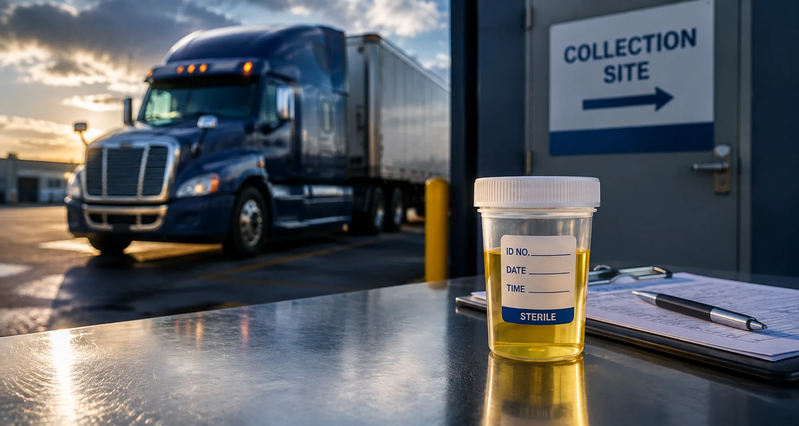

Before Safety-Sensitive Work
Testing for covered transportation positions before employment begins.
Coordinate DOT urine drug testing for pre-employment, random, post-accident, reasonable suspicion, return-to-duty and follow-up requirements with nationwide collection access.

DOT-regulated urine testingDOT urine drug testing is tied to specific testing reasons. Using the correct reason helps keep the collection and documentation aligned with the employer's regulated testing program.
Testing for covered transportation positions before employment begins.
Testing for applicable random selections under a regulated testing program.
Time-sensitive testing support after qualifying transportation accidents.
Testing associated with applicable return-to-duty and follow-up requirements.
The six existing DOT urine drug testing options and prices are preserved below.
DOT urine drug testing for covered transportation positions before employment begins.
DOT urine drug testing for applicable random testing selections and compliance requirements.
DOT urine testing support for qualifying transportation accidents when testing is required.
DOT urine testing support for applicable reasonable-suspicion testing situations.
DOT urine testing associated with applicable return-to-duty requirements.
DOT urine testing for employees subject to an applicable follow-up testing plan.
DOT urine drug testing follows the applicable federal testing process for covered transportation employees. The testing reason, collection procedure, and reporting workflow should match the regulated program.
If a driver or employee is being tested under a DOT-regulated program, use the DOT service and the correct test reason. Non-DOT testing is for situations outside those federal requirements.
View Non-DOT Services →Choose the correct testing reason, complete the order, and follow the donor instructions for collection.
Choose pre-employment, random, post-accident, reasonable suspicion, return-to-duty, or follow-up.
Provide the donor and employer information needed to coordinate the test.
Use the donor workflow and collection information provided for the test.
Visit the designated collection location and complete the regulated urine collection process.